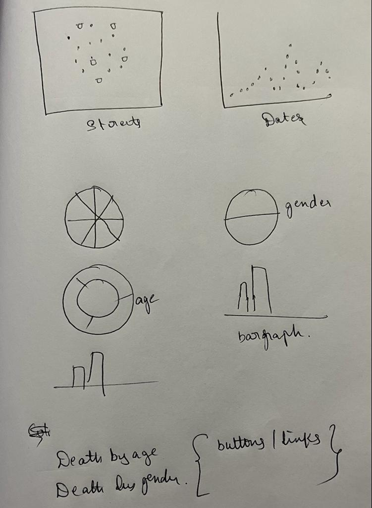
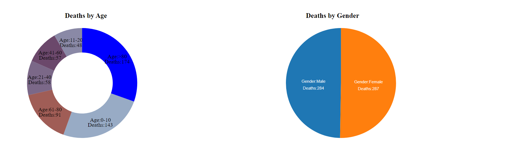
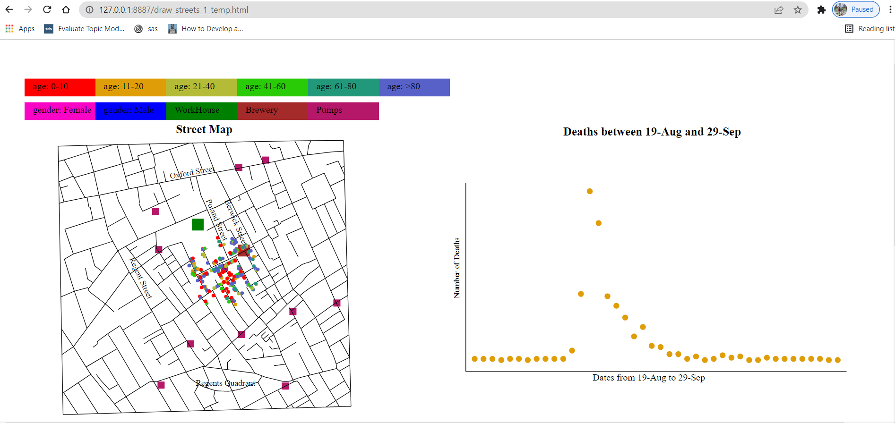

Dr. John Snow created a map that shows the deaths in London,1854 due to cholera. The map has helped to gain some insights for the reason of deaths and provided evidence that there is a relation between contaminated water and cholera. As part of the project, I’m recreating Dr. John Snow’s Cholera map using D3.
Taking a look at the data given I have worked on how the data can be shown in different views.
I have decided to show the data in terms of deaths by age, gender and also number of deaths for each day.
To visualize the data in different terms, I decided on using different charts and chose the best ones that fit to the data.
-I used shapes to represent the different points that go on the map like pumps and deaths in the city.
-To differentiate between the given age groups and gender, I chose colors. Each age group and gender are represented by separate color.
-I have constructed a map that shows the streets and some important places like workhouse, brewery of the London city.
-Then plotted pumps and deaths occurred in different streets of the city as circles, they together make a scatter plot.
-In addition, I have added street names and workhouse, brewery by observing the original map and placed them relatively in the streets map.
-To represent the deaths occurred on each day in the given time frame, I plotted a scatter plot.
-I used pie chart to see the deaths in terms of gender and a doughnut chart to show the deaths by age, as both the charts give a vivid view of the different groups in the data.
Apart from the charts, to make the visualization more interactive, I have implemented some functionalities and they are:
-The visualization makes users to filter deaths by age and gender.
-Hovering over deaths on the map gives details of that death like the age and gender.
-Hovering on a data point on the scatter plot that shows deaths occurred on each day, the total deaths till that date filtered on the map and also gives information of the date, deaths occurred on that date and total deaths till that date.
-A zoom functionality has been provided, using which users can zoom in, zoom out and pan the streets map.
-The deaths on the street map can be clustered into groups by clicking on a death point. It gives the deaths that happened within a radius of 2.
-By clicking a point in the obtained cluster, deaths within the radius of 4 from that point will be obtained.
From the visualization, I could observe the following:
-There are more deaths in the age groups 0-10 and >80.
-More female deaths have occurred than male deaths, but the difference in deaths is quite small.
-The epidemic has reached a peak stage in the early September and then gradually decreased.
-More number of deaths can be seen in the area of pump, which is near to workhouse and brewery and it shows that the water from that pump is more contaminated.
